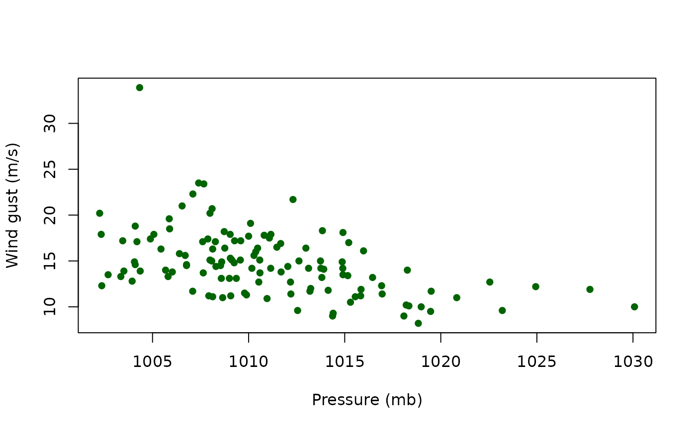

Monthly maximum wind gust speed and the daily mean atmospheric pressure on the day of each maximum, recorded at INMET station A-868 (latitude \(-26.95083^\circ\), longitude \(-48.76194^\circ\)) in Itajai, Santa Catarina, Brazil, from July 2010 to October 2020.
Format
A data frame with 124 rows and 3 variables:
- month
Integer index of the monthly observation (1 = July 2010, ..., 124 = October 2020).
- wind
Numeric. Monthly maximum wind gust speed (m/s).
- pressure
Numeric. Daily mean atmospheric pressure (mb) on the day of the monthly maximum.
Details
Observation 82 corresponds to the catastrophic event of April 26, 2017 (wind = 33.9 m/s), a severe cold front that struck the coast of Santa Catarina, with fatalities reported by local civil-defense authorities. This observation is identified as highly influential on the tail-shape parameter by the diagnostics implemented in this package.
References
Ospina, R., Lima, J. I. C., Barros, M., and Macedo, A. M. S. (2026). Local influence diagnostics for the extreme-value Birnbaum-Saunders regression model. Submitted.
Examples
data(itajai)
str(itajai)
#> 'data.frame': 124 obs. of 3 variables:
#> $ month : int 1 2 3 4 5 6 7 8 9 10 ...
#> $ wind : num 11.7 16.4 10.5 17.2 11.2 12.3 14 17.1 13.7 14.8 ...
#> $ pressure: num 1020 1013 1015 1009 1008 ...
plot(itajai$pressure, itajai$wind, pch = 16, col = "darkgreen",
xlab = "Pressure (mb)", ylab = "Wind gust (m/s)")
